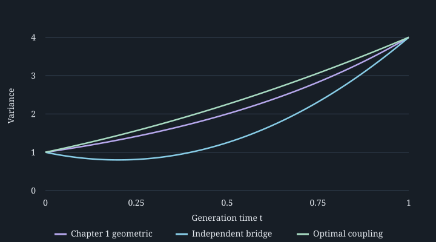

2. Flow matching: learning a probability transport
Conditional paths, marginal velocities, and regression · MIT 6.S184, 2026
The recording supplies the sequence. The Gaussian loss calculation, fitted experiment, counterexamples, and problems are independent teaching constructions. Core sources: Holderrieth and Erives, Section 3, PDF pp. 14–24, and Lipman et al., Sections 3–4.
2.1 A correct sampler needs a field that data can teach 01:19
The Gaussian simulator from Chapter 1 had a useful advantage: its correct velocity was available analytically. With real training examples, the destination distribution is observed through samples, while the velocity that reaches it is unknown. Evaluating a proposed field by repeatedly generating full trajectories would make each training update depend on an ODE solver. Flow matching replaces that procedure with regression on quantities constructed from a data example and an independent noise draw.
Keep generation time $t\in[0,1]$ increasing from noise to data. Let $d$ be the state dimension, $X_t\in\mathbb R^d$ the random state, and $u_t(x)\in\mathbb R^d$ a velocity at deterministic state $x$. The desired ODE has $dX_t/dt=u_t(X_t)$, starts in a known law $P_0$, and ends in the target law $P_{\mathrm{data}}$. A candidate network $u_t^\theta$ has trainable parameters $\theta$. Training must identify a field from samples of the target; it need not recover a unique possible field.
Three choices enter the construction. A probability path specifies the desired law at each intermediate time. A compatible velocity transports those laws. A regression objective makes that velocity learnable without evaluating the target density. Conditional versions of these objects depend on one known clean example. Marginal versions average over the unknown population of examples in a precise way. Keeping these two levels distinct explains why a training target can be available even when the field being learned is not.
2.2 Choose intermediate laws before choosing dynamics 03:25
Let $Z\in\mathbb R^d$ be a clean data example with law $P_{\mathrm{data}}$ and finite second moment $\mathbb E\|Z\|^2$. Let $\varepsilon\sim\mathcal N(0,I_d)$ independently of $Z$, where $I_d$ is the identity covariance. The fixed value $z$ denotes a possible endpoint. A conditional path assigns a law to the noisy state for each $z$, beginning in the same simple law and ending at that endpoint. Write $\delta_z$ for the Dirac law, which assigns probability one to the point $z$.
Choose scalar schedules $\alpha_t,\beta_t$ that are continuous on $[0,1]$, continuously differentiable before time one, and satisfy $\alpha_0=0$, $\beta_0=1$, $\alpha_1=1$, and $\beta_1=0$. Require $\beta_t\gt0$ for $t\lt1$. Monotonic schedules are common, but endpoint conditions and positivity are the hypotheses needed for the construction here. Define
The conditional density, denoted $p_t(x\mid z)$, is explicitly evaluable before the endpoint. At time zero it is the standard Gaussian, independently of $z$. At time one the conditional law is $\delta_z$. That endpoint law has no ordinary density with respect to volume; a zero-variance Gaussian is being understood as a probability measure. Substituting $\beta_1=0$ into the positive-variance density formula would be an error.
The marginal law $P_t$ is obtained by sampling $Z$, sampling its noisy conditional state, and forgetting $Z$. Its density for $t\lt1$ is
The probability measure in this integral permits continuous, discrete, or empirical data laws. If data are a finite training set, it is a finite Gaussian mixture. No population density is required to generate a training pair. Evaluating the marginal density may nevertheless require summing over a large dataset or integrating over an unknown population. Sampling a law and evaluating its density remain different operations, as in Chapter 1.
The endpoint is justified without a density limit. Independence and the zero mean of $\varepsilon$ give
This proves mean square convergence of the constructed random variables and therefore convergence in distribution. Equivalently, expectations of bounded continuous test functions converge to their expectations under $P_{\mathrm{data}}$. That is the weak endpoint interpretation used below. The assumptions do not promise that a globally regular invertible ODE map exists through a singular endpoint.
Running bridge. Return to the endpoints $\mathcal N(0,1)$ and $\mathcal N(2,4)$, but choose a different intermediate path from Chapter 1. Take independent $Z\sim\mathcal N(2,4)$ and $\varepsilon\sim\mathcal N(0,1)$, and set $\alpha_t=t$, $\beta_t=1-t$. Then
The variance has minimum $4/5$ at $t=1/5$, so this path first contracts and then expands. Chapter 1's variance $4^t$ increases throughout. Identical endpoints leave considerable freedom in the laws between them. State and time remain dimensionless.
Fixing $Z$ and $\varepsilon$ in this formula also defines a straight random trajectory. The family of its one-time laws does not require a learned ODE to follow those individual lines. Different trajectories can carry exactly the same snapshots of probability. The distinction becomes concrete when posterior averaging constructs the marginal field.
2.3 A conditional velocity is available by differentiation 18:10
For a fixed clean endpoint $z$, let $\xi\in\mathbb R^d$ be a deterministic starting coordinate. The affine map $\psi_t^z(\xi)=\alpha_tz+\beta_t\xi$ transports a standard Gaussian to the specified conditional Gaussian. A velocity must describe motion at the current state $x$, rather than at the unavailable initial coordinate $\xi$. Because $\beta_t\gt0$, invert the map and differentiate at fixed $\xi$:
A dot denotes differentiation in generation time. Substituting the inverse gives the conditional vector field
It has state units per unit time if physical units are assigned. Its initial condition is correct because $\psi_0^z(\xi)=\xi$. Evaluating the field at $x=\psi_t^z(\xi)$ returns exactly $\partial_t\psi_t^z(\xi)$. Thus the proposed map solves the conditional ODE and gives the stated law. This derivation is the affine Gaussian construction in Lipman et al., Theorem 3; the particular schedules and zero-noise endpoint here follow the course.
For the straight schedule, the field reduces to $(z-x)/(1-t)$. Its denominator tends to zero, consistently with collapse of all conditional samples onto $z$. The field is undefined at time one, although every explicit conditional trajectory has a limit. Uniform Lipschitz bounds through the endpoint would rule out such collapse, as Chapter 1 explained. The original flow-matching paper also studies positive terminal noise, leaving a small Gaussian around each data point; that avoids this particular singularity but changes the terminal distribution to a smoothed target.
Along a sampled bridge the apparently singular terms cancel. With the same sampled $Z,\varepsilon$ as above, define the path derivative $V_t=\dot\alpha_tZ+\dot\beta_t\varepsilon$. Substitution gives
This is a computable training target: the example and noise that produced the noisy state are known during training. At generation time the clean endpoint is unknown, so the conditional ODE itself is not a usable unconditional sampler. Supplying $Z$ to the model as an input would solve a different problem: reconstructing an endpoint already revealed to it. The desired model receives $t$ and $X_t$, and must learn what the missing endpoint implies on average.
2.4 The marginal field averages over a posterior 27:19
At a noisy state $x$, different clean endpoints explain the observation with different probabilities. Bayes' rule gives the posterior probability measure over those endpoints:
It integrates to one by the definition of $p_t$. Define the marginal velocity as its average of the conditional velocities, assuming the relevant first moments exist:
The last equality uses $V_t=u_t(X_t\mid Z)$ and the conditional law of $Z$ given $X_t$. Conditional expectations are determined up to sets of probability zero; an ODE implementation needs a suitable statewise version and regularity. Where the marginal density is positive, the integral supplies a specific version. The flux identity behind this construction is the marginalization theorem in Lipman et al., Theorem 1. Its conservation proof follows in the next section.
The prior $P_{\mathrm{data}}$ cannot replace the posterior in this average. To see the consequence, consider an auxiliary scalar example with $Z$ equally likely to be $-a$ or $a$, for $a\gt0$. Under the straight schedule, the ratio of the two conditional Gaussian likelihoods is $\exp(2atx/(1-t)^2)$. The equal prior weights cancel in the posterior odds. Writing $\tanh(r)=(e^{2r}-1)/(e^{2r}+1)$ gives
Positive observations favor the positive endpoint, increasingly strongly as the noise decreases. Prior averaging instead gives $-x/(1-t)$ because $\mathbb E[Z]=0$. That incorrect field has explicit flow $(1-t)\xi$, which collapses to zero rather than to either mode. Losing the observation in the average destroys the target distribution. The example's atomic endpoint requires a weak limit; all displayed fields and densities are used only for $t\lt1$.
An exact marginal velocity for the running Gaussian
For the main bridge, $V=Z-\varepsilon$ is independent of time as a random variable, with mean two and variance five. Its covariance with $X_t$ is $c_t=4t-(1-t)=5t-1$. The pair $(X_t-m_t,V-2)$ is jointly Gaussian, since it is a linear transformation of the independent Gaussian inputs. Its covariance matrix has entries $v_t,c_t,5$ and determinant $5v_t-c_t^2=4$.
Completing the square identifies the conditional mean without assuming a Gaussian-conditioning formula. For deterministic values $x$ and $\nu$ of $X_t$ and $V$, respectively, the quadratic form in their joint density has numerator
The exponent is minus this expression divided by eight. Conditioning on $x$ makes the first term constant; the second is a Gaussian quadratic in $\nu$. Its conditional mean and variance therefore give
At $t=1/2$, the path has $m_t=1$, $v_t=5/4$, and $u_t(x)=0.8+1.2x$. The conditional training target still varies around that velocity, with variance $16/5=3.2$. A correct mean predictor cannot remove this target noise.
The marginal ODE is verified independently. Set $\psi_t(\xi)=m_t+\sqrt{v_t}\xi$. Since $\dot m_t=2$ and $\dot v_t=2c_t$, differentiation gives $\partial_t\psi_t=2+(c_t/v_t)(\psi_t-m_t)=u_t(\psi_t)$. Also $\psi_0(\xi)=\xi$. Thus this ODE has exactly the Gaussian snapshots chosen above and endpoint $2+2\xi$. It does not preserve the original independent pair $(Z,\varepsilon)$ along trajectories: the ODE couples every time to a single initial draw. Matching the snapshots, rather than reproducing each original bridge line, is what the marginal construction accomplishes.
2.5 Conservation makes marginalization work 35:01
A law can change at a location because probability flows through its boundary. In one dimension let $J_t(x)=p_t(x)u_t(x)$ be probability flux, and consider an interval $[a,b]$. Its probability increases at rate $J_t(a)-J_t(b)$: flux through the left boundary enters, while flux through the right boundary leaves. If $p$ and $J$ are differentiable, the fundamental theorem of calculus yields
Because this holds for all intervals, $\partial_t p_t=-\partial_x(p_tu_t)$. In $d$ dimensions the corresponding divergence is $\operatorname{div}J=\sum_{i=1}^d\partial_{x_i}J_i$, the net outward flux per unit volume. Consequently the continuity equation is $\partial_t p_t=-\operatorname{div}(p_tu_t)$. Negative divergence measures net inflow. The sign follows from this balance; the source slide's contrary red annotation is not used.
A weak formulation needs less regularity and continues to make sense without an endpoint density. Let $\varphi:\mathbb R^d\to\mathbb R$ be continuously differentiable and zero outside a compact set. Such a test function probes a bounded region smoothly. Fix a horizon $\tau\lt1$, and suppose $\alpha,\beta$ are continuously differentiable on $[0,\tau]$ with $\beta\gt0$. Their derivatives are bounded there. The finite second moment of $Z$ ensures that the bridge derivative $V_t$ has integrable norm. The ordinary chain rule and dominated convergence give the following result.
Proposition 2.1 — marginalization in weak form. For the bridge $X_t=\alpha_tZ+\beta_t\varepsilon$ and a version $u_t(x)=\mathbb E[V_t\mid X_t=x]$,
Here $\nabla\varphi$ is the spatial gradient, and the dot is the Euclidean inner product. With a smooth density and flux, this is the continuity equation tested against $\varphi$.
Proof. The pathwise chain rule gives $d\varphi(X_t)/dt=\nabla\varphi(X_t)\cdot V_t$. Its absolute value is bounded by $\sup_x\|\nabla\varphi(x)\|$ times a constant multiple of $\|Z\|+\|\varepsilon\|$, an integrable random variable independent of $t$ on this horizon. This bound permits differentiation under expectation. Next condition on $X_t$ and use the defining property of conditional expectation:
This gives the stated identity. If a differentiable density and flux exist, the right-hand side is $\int\nabla\varphi\cdot(p_tu_t)\,dx$. Integration by parts, with no boundary term because $\varphi$ has compact support, gives $-\int\varphi\operatorname{div}(p_tu_t)\,dx$. Equality for every test function is the weak continuity equation. ∎
The proof explains the posterior weights: they are exactly what makes conditional expectation preserve probability flux. At positive density, multiplying the posterior formula by $p_t(x)$ gives $p_t(x)u_t(x)=\int p_t(x\mid z)u_t(x\mid z)P_{\mathrm{data}}(dz)$. With justified interchange of differentiation and integration, integrating the conditional continuity equations gives the same marginal equation. Lipman et al., Appendix A presents that density-based proof. The weak argument avoids dividing by a density at its zeros.
Conservation alone should not be mistaken for a unique ODE sampler. A chosen velocity still needs existence, nonexplosion, and uniqueness conditions. In our Gaussian case the explicit affine flow already establishes these facts, including a regular endpoint. To identify a classical density solution more generally, suppose in one dimension that $u$ has a continuous spatial derivative and an existing globally defined invertible flow $\psi$ that is continuously differentiable in time and initial coordinate. These stronger assumptions hold directly for our affine example. Differentiating the ODE gives the flow derivative $D_t=\partial_\xi\psi_t$ and its equation $\dot D_t=(\partial_xu_t)(\psi_t)D_t$, with $D_0=1$. Along a classical continuity solution, the product rule then gives
Hence $p_t(\psi_t(\xi))D_t=p_0(\xi)$, the density change-of-variables formula. It identifies the transported density when the classical solution and invertible flow exist. Singular endpoint limits require separate care; the finite-horizon weak identity does not supply missing global regularity.
The same law path can admit different velocities
Even a unique solution for each specified ODE does not make the velocity unique for a chosen law path. For the stationary standard Gaussian density in $\mathbb R^2$, compare $u(x)=0$ with $u(x)=\Omega x$, where $\Omega=\left(\begin{smallmatrix}0&-1\\1&0\end{smallmatrix}\right)$ is a rotation generator. It has trace zero and $x^{\mathsf T}\Omega x=0$. Since $\nabla p(x)=-xp(x)$,
The zero field leaves every point fixed; the rotation field moves points around circles. Both preserve the Gaussian snapshots. To modify a field without changing its law path, the added velocity $w_t$ must satisfy $\operatorname{div}(p_tw_t)=0$. Merely requiring $\operatorname{div}w_t=0$ is insufficient for a nonuniform density. The field selected by conditional regression is one particular compatible choice, rather than the only possible generative dynamics.
2.6 Conditional regression learns the marginal mean 52:36
The marginal field still contains an intractable posterior average. Training cannot generally evaluate it as a supervised label. It can evaluate the conditional target $V_t$ that produced each noisy state. Squared-error regression makes these two observations compatible because its optimal prediction is a conditional mean.
Let $T$ be a random training time uniformly distributed on $(0,1)$, independently of $Z$ and $\varepsilon$. Write $X=\alpha_TZ+\beta_T\varepsilon$ and $V=\dot\alpha_TZ+\dot\beta_T\varepsilon$. A predictor $g(T,X)$ receives only the time and noisy state. The marginal target is $u_T(X)=\mathbb E[V\mid T,X]$. Assume $V$ and $g(T,X)$ have finite second moments under this same joint training distribution. Define
The expectations include the random time, clean data, and noise. Both objectives must use the same sampling weights. The first compares with the desired marginal field; the second uses the available conditional label. Their difference has a precise sign and interpretation.
Proposition 2.2 — the regression decomposition. Under the finite-second-moment assumptions,
The constant $K$ is independent of the predictor. Over all square-integrable predictors, the minimizer is $u_T(X)$ almost surely; within a restricted model class, the two objectives have exactly the same minimizing set.
Proof. Add and subtract $u_T(X)$ inside $g-V$ and expand the squared norm. The cross term has expectation zero because
The other terms are the two risks and the nonnegative residual $K$. Finiteness justifies this expansion and the conditional-expectation operation. The marginal risk vanishes precisely when $g=u_T(X)$ almost surely. Adding the same finite constant to every candidate changes neither their ordering nor their minimizing set. ∎
This is the conditional-flow-matching identity of Lipman et al., Theorem 2, expressed as an orthogonal decomposition. It also explains why gradients agree. For a differentiable parameterized predictor $g=u^\theta$, differentiation of the risks gives identical expected parameter gradients whenever differentiation may pass through expectation. A sufficient local condition is an integrable bound, uniform over a neighborhood of $\theta$, on $\|\partial_\theta u^\theta\|(\|u^\theta\|+\|V\|)$. The constant then has zero derivative. Two individual minibatch gradient estimates need not agree: their conditional-label noise remains.
The claim concerns population objectives. A finite dataset replaces $P_{\mathrm{data}}$ by an empirical law. A restricted network may miss the conditional mean, an optimizer may miss its class optimum, and a numerical solver may distort the fitted field's endpoint distribution. None of these errors is removed by equal gradients in expectation. In particular, small average field error does not supply the uniform error bound used for Chapter 1's deterministic sensitivity estimate.
The Gaussian optimum has a positive loss floor
For the running straight bridge, $V=Z-\varepsilon$ has second moment nine. Its conditional variance is $4/v_t$, independently of the observed state. Integrating over the uniform time gives an exactly known noise floor:
The derivative of the arctangent in brackets is $2/v_t$. Also $\arctan(2)+\arctan(1/2)=\pi/2$, since both arguments are positive reciprocals. These facts establish the integral. Thus the exact marginal field achieves conditional loss $\pi$, while the zero predictor has conditional loss nine and marginal loss $9-\pi$. A model whose conditional loss fails to approach zero can be behaving correctly. Comparing its loss with the irreducible conditional variance is more informative.
For a concrete model restriction, take predictors that return one constant $b\in\mathbb R$. Their conditional risk is $\mathbb E(b-V)^2=5+(b-2)^2$, so $b=2$ minimizes it at five. It also minimizes the marginal risk, at $5-\pi$, but cannot represent the time- and state-dependent field above. This separates agreement of minimizers between objectives from sufficient model expressiveness.
Finite-risk assumptions matter near singular schedules. The official Lab 2 also considers $\alpha_t=t$, $\beta_t=\sqrt{1-t}$. Its target is $V_t=Z-\varepsilon/(2\sqrt{1-t})$, with $\mathbb E[V_t^2]=\mathbb E[Z^2]+1/[4(1-t)]$ in the scalar independent setting. The ideal unweighted time integral diverges logarithmically. That schedule therefore lies outside Proposition 2.2's finite-risk hypotheses on the full interval. A cutoff before one or an integrable time weighting repairs this particular problem. Finite floating-point random times introduce an implicit cutoff; they do not prove that the ideal continuous-time risk is finite. The straight schedule used in our experiment has a finite target second moment throughout.
2.7 Train with sampled velocities, then integrate the fitted field 1:13:28
The Gaussian bridge turns the population identity into a short training procedure. Draw an example $Z$, an independent standard Gaussian $\varepsilon$, and a random time $T$. Construct $X=TZ+(1-T)\varepsilon$ and label $V=Z-\varepsilon$. Evaluate $u_T^\theta(X)$ and update parameters to reduce the squared residual. A minibatch averages independent copies of this residual. There is no need to solve the current model's ODE to construct those training pairs. This is the meaning of simulation-free training; generation after training still requires numerical integration.
The distinction between a conditional label and model inputs is operationally important. The data loader knows $Z$ and the noise generator knows $\varepsilon$, so both may be used to construct the target. The predictor receives only $T,X$. Feeding the clean endpoint into the predictor would let it exploit information unavailable when generating a new sample. The sampling program begins with fresh Gaussian noise and evolves the learned field with fixed parameters, using the numerical methods developed in Chapter 1.
A small fitted experiment makes this learning step inspectable. At $t=1/2$ the population optimal affine predictor is $0.8+1.2x$. The following standalone program actually fits a slope and intercept from 10000 independent conditional examples. It uses only Python's standard library, reads no files, and makes no network calls. Its output is a finite-sample estimate, not the analytic coefficients inserted into code.
import random
rng = random.Random(184)
sample_count = 10000
xs, targets = [], []
for _ in range(sample_count):
clean, noise = rng.gauss(2, 2), rng.gauss(0, 1)
xs.append(0.5 * clean + 0.5 * noise)
targets.append(clean - noise)
mean_x = sum(xs) / sample_count
mean_v = sum(targets) / sample_count
covariance = sum(x * v for x, v in zip(xs, targets)) / sample_count
covariance -= mean_x * mean_v
variance = sum(x * x for x in xs) / sample_count - mean_x**2
slope = covariance / variance
intercept = mean_v - slope * mean_x
print(f"slope={slope:.6f}, intercept={intercept:.6f}")slope=1.169798, intercept=0.823440
The fitted coefficients differ from $1.2$ and $0.8$ because the observed labels contain conditional variance $3.2$, and only finitely many are observed. The predictor can estimate their conditional mean without making every training residual small. Repeating the experiment with new draws changes the fit. A fixed seed makes this particular numerical record reproducible, rather than turning its output into a population theorem.
A complete learned sampler with separate error measurements
The downloadable ch02.py extends fitting across time. It uses 32 equal time bins and fits one scalar affine function $a_jx+b_j$ in each bin, where $j$ indexes bins. For a bin's observations, least squares gives $a_j=\widehat{\operatorname{Cov}}(X,V)/\widehat{\operatorname{Var}}(X)$ and $b_j=\overline V-a_j\overline X$. Bars denote sample averages, and the covariance and variance use those same observations. The implementation rejects empty or degenerate designs. It trains on 300000 pairs, evaluates 200000 independent heldout pairs, and generates 20000 samples. These are low-dimensional parameter fits, not neural-network or image training.
The fitted field is constant in its time parameter inside each bin but remains affine in state. Its exact solution across a bin of width $w$ is $x\mapsto e^{a_jw}x+b_j(e^{a_jw}-1)/a_j$ when $a_j\ne0$, and $x\mapsto x+b_jw$ when $a_j=0$. Multiplying these affine maps produces a time-one map $x\mapsto Ax+B$. A Gaussian initialization therefore gives exactly $\mathcal N(B,A^2)$. This exact integration supplies a reference for Euler without assuming that its sampling histogram is accurate.
To distinguish function-class error from estimation error, the program also evaluates the population best function in each time bin. If its center is $\mu$ and width is $w$, then $\mathbb E[T\mid j]=\mu$ and $\operatorname{Var}(T\mid j)=w^2/12$. Averaging the bridge moments over that bin gives $\operatorname{Cov}(X,V\mid j)=5\mu-1$ and $\operatorname{Var}(X\mid j)=5\mu^2-2\mu+1+9w^2/12$. Their ratio is the population bin slope. These coefficients are comparators only; sampled sufficient statistics determine the trained coefficients.
| Predictor or error contribution | Conditional loss or excess |
|---|---|
| Exact unrestricted marginal field | 3.141592654 |
| Population best 32-bin model | 3.142705090 |
| Model fitted to sampled pairs | 3.143151583 |
| Excess from the bin model class | 0.001112436 |
| Additional excess from finite training data | 0.000446494 |
The two excesses add to the marginal field error $0.001558930$ by Proposition 2.2 and least-squares projection within the bin class. The heldout conditional loss is $3.136082$, with estimated standard error $0.011283$. Its value below $\pi$ is sampling fluctuation. Evaluating fitted and oracle residuals on the same heldout draws gives their paired difference $0.001634$, with standard error $0.000347$, consistent with the exact frozen-model excess. Raw loss fluctuations can be much larger than the difference between two predictors.
For terminal comparison define $D=\sqrt{(B-2)^2+(|A|-2)^2}$, the Euclidean error in Gaussian mean and standard deviation. Exact integration of the population bin field gives $D=0.000345$. Exact integration of the fitted field gives $D=0.009574$. With 1024 Euler steps the fitted sampler gives mean $1.991726$, standard deviation $1.992876$, and $D=0.010918$. Comparing these three samplers separates time-bin restriction, finite-data fitting, and numerical integration; their signed mean/scale differences telescope, while squared errors do not generally add.
Refining Euler from 256 to 512, 1024, and 2048 steps reduces its error relative to the exact fitted flow from $0.005373$ to $0.002692$, $0.001348$, and $0.000674$. That numerical error approximately halves at each refinement. The fitted field's own terminal discrepancy remains. Increasing the solver step count cannot make it equal to the exact field. Likewise, increasing the number of generated samples reduces measurement uncertainty without repairing the underlying fitted law.
The program saves ch02-results.json, including seeds, sample counts, coefficients, heldout uncertainty, terminal laws, and runtime. Running it writes only that report; --write-figure also regenerates Figure 2.1. The recorded run used training seed 1842026 and took about 0.87 seconds on the local CPU; runtime is an observation, not a portable performance guarantee. The original Lab 2 provides the broader PyTorch route with learned vector fields. Its training timings and image results are not reproduced by this affine experiment.
2.8 Straight conditional paths do not guarantee optimal marginal transport
The bridge construction raises a further design question: how should noise and clean endpoints be paired? A coupling is a joint law of two random variables with prescribed marginal laws. Our training pairs use the independent coupling. A different pairing can retain both endpoint distributions while changing the intermediate laws and the regression targets. This choice is central to the generalization developed by Tong et al., Section 3.2.3. It is an extension of the lecture's construction, not an additional claim about its demonstrations.
For the scalar endpoints, write $P_1=P_{\mathrm{data}}$ and define the squared quadratic transport distance $W_2(P_0,P_1)^2$ as the infimum of $\mathbb E[(Z-\varepsilon)^2]$ over their couplings. The marginals fix $\mathbb E[Z^2]=8$, $\mathbb E[\varepsilon^2]=1$, and their means. Therefore every coupling satisfies
where the inequality is Cauchy–Schwarz for the centered random variables. Equality is attained by $Z=2+2\varepsilon$. Its displacement interpolation is $X_t=2t+(1+t)\varepsilon$, whose velocity along each trajectory is the time-independent random value $2+\varepsilon$. Thus the optimal cost is five, and the path variance is $(1+t)^2$.
A dynamical comparison also accounts for the route taken between endpoints. Define path energy as $\int_0^1\mathbb E[u_t(X_t)^2]dt$ for square-integrable velocities and trajectories that satisfy the ODE. Cauchy–Schwarz in time gives $\int_0^1\dot X_t^2dt\ge(X_1-X_0)^2$ on each absolutely continuous trajectory. Taking expectations shows every such transport between our endpoints has energy at least five. The interpolation from the optimal coupling attains five because its velocity is constant along each path.
For the independent bridge's marginal field, conditional variance gives $\mathbb E[u_t(X_t)^2]=\mathbb E[V^2]-\mathbb E[\operatorname{Var}(V\mid X_t)]=9-4/v_t$. Its energy is consequently $9-\pi=5.858407$, strictly above five. Its conditional trajectories were straight, yet the marginal path first contracts before expanding. The marginal ODE even has the optimal terminal map $2+2\xi$ in this one-dimensional example; its nonoptimality concerns the intermediate path energy. An endpoint coupling and an energy-minimizing law path are distinct objects.

This example makes precise the caution in Lipman et al., PDF p. 6: optimal conditional interpolation does not generally imply optimal marginal transport. The linear-interpolant regression used here is also the starting point of Liu, Gong, and Liu's rectified flow. Fitting a field to straight-line targets does not assert that its own ODE trajectories are all straight. Additional coupling or reflow procedures change the construction, and their empirical benefits require separate evidence.
The Gaussian terminal diagnostic above has a transport interpretation too. For a generated law $\mathcal N(B,A^2)$ and target $\mathcal N(2,4)$, centering the variables and applying the same covariance bound gives a minimum squared displacement of $(B-2)^2+(|A|-2)^2$. Pairing their standardized Gaussian coordinates attains that bound. Thus $D$ is exactly their quadratic transport distance. For a non-Gaussian generator, matching its mean and standard deviation would not identify its full law or establish this equality.
2.9 What is learned, and what remains to be checked
Flow matching supplies a tractable conditional regression objective for a marginal transport field. The conditional path is chosen; its sampled derivative is the label; posterior averaging identifies the desired prediction. Conservation explains why that prediction is compatible with the chosen law path. The exact Gaussian case checks each step, while actual affine fitting separates a population identity from a finite implementation.
The result is not a guarantee of finite-data generalization, successful neural optimization, or a numerically exact endpoint sampler. Endpoint singularities and infinite-risk schedules require explicit treatment. Matching one-time marginals does not identify trajectory dependence, and choosing straight conditional paths does not settle marginal transport optimality. The next mathematical question is how a score function permits stochastic dynamics that retain a desired probability path. That construction needs a new relation between drift, diffusion, and density evolution.
2.10 Problems with worked solutions
Problem 2.1 — derive a conditional training target
For a fixed $z\in\mathbb R^d$, let $\psi_t^z(\xi)=\alpha_tz+\beta_t\xi$ with the schedule assumptions of Section 2.2. Derive its velocity at state $x$, verify the sampled derivative label, and explain why the endpoint density and inverse cannot be evaluated by the same formulas at $t=1$.
Solution
Before time one, positivity of $\beta_t$ gives $\xi=(x-\alpha_tz)/\beta_t$. Differentiate the affine map at fixed $\xi$ and substitute this inverse:
For $X_t=\alpha_tZ+\beta_t\varepsilon$, the bracket becomes $\beta_t\varepsilon$, so the label is $\dot\alpha_tZ+\dot\beta_t\varepsilon$. At $t=1$ the affine map sends every $\xi$ to $z$, its inverse is absent, and the conditional law is a Dirac measure. A zero-variance density expression divides by zero; taking the weak endpoint limit is a different operation. With the straight schedule, the sampled label stays $Z-\varepsilon$ although the statewise conditional field is singular.
Problem 2.2 — retain the noisy observation in the average
Let $Z$ take values $-2$ and $2$ equally, with the straight Gaussian bridge. At $t=1/2$ and observed $x=1$, calculate the posterior mean and marginal velocity. Compare the time-one law obtained from prior averaging.
Solution
The posterior odds favoring $Z=2$ are $\exp(2\cdot2\cdot(1/2)\cdot1/(1/2)^2)=e^8$. Its posterior probability is $e^8/(1+e^8)$. Thus $\mathbb E[Z\mid X_{1/2}=1]=2(e^8-1)/(e^8+1)=2\tanh4$. The marginal velocity is $[2\tanh4-1]/(1/2)=4\tanh4-2$. Prior averaging gives $-x/(1-t)$ and flow $(1-t)\xi$, ending at zero with probability one. It cannot yield the prescribed two-atom target. The posterior calculation uses likelihoods at an observed value with positive marginal density; it does not assign positive point probability to that observation.
Problem 2.3 — distinguish flux conservation from zero divergence
For the standard Gaussian density in $\mathbb R^2$, show that a constant added velocity $w=(1,0)$ is divergence-free but does not preserve the density. Then verify why the rotation velocity $\Omega x$ does preserve it. Does that contradict uniqueness for either specified ODE?
Solution
The constant vector has $\operatorname{div}w=0$, but its probability flux satisfies $\operatorname{div}(pw)=\partial_{x_1}p=-x_1p$, which is not zero. Translation therefore changes the Gaussian mean. For the rotation matrix in Section 2.5, $\operatorname{tr}\Omega=0$ and $x^{\mathsf T}\Omega x=0$, giving $\operatorname{div}(p\Omega x)=0$. Both the static and rotation ODEs have unique trajectories for a specified initial point, but they are different ODEs. Equality of their stationary density paths imposes a weaker constraint than equality of their velocities or trajectories.
Problem 2.4 — a positive training optimum
For the running Gaussian bridge, derive $K=\pi$. Find the best predictor restricted to constants and both its conditional and marginal risks. Which of these results changes if the class is allowed to contain the exact field?
Solution
The conditional variance is $5-c_t^2/v_t=(5v_t-c_t^2)/v_t=4/v_t$. Uniform time averaging gives $K=2[\arctan((5t-1)/2)]_0^1=\pi$. Since $V$ has mean two and variance five, a constant $b$ has conditional risk $5+(b-2)^2$. The optimum is $b=2$, conditional risk five, and marginal risk $5-\pi$. Allowing the exact field reduces marginal risk to zero and conditional risk to $\pi$. The irreducible conditional variance is unchanged: greater expressiveness removes prediction bias, not the randomness of the labels.
Problem 2.5 — diagnose the trained sampler
The fitted experiment reports conditional heldout loss below $\pi$, yet its exact integrated population loss exceeds $\pi$. Explain the apparent conflict. If generated samples are increased tenfold with fitted coefficients and Euler step count held fixed, which reported errors can decrease, and which remain? How would you isolate solver error?
Solution
The population bound concerns an expectation, while heldout loss is a random average. Here its standard error is about $0.011283$, larger than its small downward fluctuation relative to $\pi$. The paired fitted-minus-oracle estimate removes much of their shared fluctuation and measures a positive excess consistent with exact integration. More generated draws reduce uncertainty in empirical terminal moments and distribution diagnostics, approximately by the square root of the sample-count increase for ordinary mean estimates. They change neither the fitted field nor its discrete sampler law. To isolate solver error, compare the Euler affine map with exact bin-by-bin exponential integration of those same fitted coefficients, then refine the step count. Comparing only with the target mixes fitting and solver errors.
Problem 2.6 — repair an infinite-risk schedule
Use $\alpha_t=t$, $\beta_t=\sqrt{1-t}$ with the running independent Gaussian inputs. Calculate the target second moment. Replace the uniform time interval by $[0,1-\delta]$, for $0\lt\delta\lt1$, and derive its averaged target second moment. Explain what this changes in the objective.
Solution
The derivative label is $V_t=Z-\varepsilon/(2\sqrt{1-t})$. Independence and zero noise mean remove the cross term, so $\mathbb E[V_t^2]=8+1/[4(1-t)]$. Its integral over $[0,1)$ diverges. A uniform time on the shorter interval has density $1/(1-\delta)$ there, giving
This is finite for every fixed positive cutoff. It makes the target square-integrable and permits the regression decomposition for square-integrable predictors. It also removes training weight from the final time segment; it does not prove accuracy there or justify treating the cutoff objective as the original divergent one. The straight schedule avoids this particular divergence without a cutoff.
2.11 Sources and evidence boundaries
- Peter Holderrieth and Ezra Erives, Introduction to Flow Matching and Diffusion Models, 2026 course edition, Section 3, PDF pp. 14–24. Lecture 2 slides and the timestamp-linked recording supply the chronological spine. Written mathematics is checked separately from automatic captions.
- Yaron Lipman, Ricky T. Q. Chen, Heli Ben-Hamu, Maximilian Nickel, and Matt Le, Flow Matching for Generative Modeling, 2023 revision, Sections 3–4, PDF pp. 3–6, and Appendix A, PDF pp. 14–15. Supports marginalization, conditional loss equivalence, affine Gaussian paths, terminal smoothing, and the conditional-versus-marginal OT distinction.
- Alexander Tong and colleagues, Improving and generalizing flow-based generative models with minibatch optimal transport, 2024 revision, Sections 2–3, PDF pp. 3–7, and Appendix A, PDF pp. 18–19. Supports general conditioning variables, coupling choices, and smoothed endpoint qualifications. No minibatch-OT benchmark is reproduced.
- Xingchao Liu, Chengyue Gong, and Qiang Liu, Flow Straight and Fast: Learning to Generate and Transfer Data with Rectified Flow, 2022, Section 2.1, PDF pp. 4–5. Supports the linear-interpolant regression connection and distinction between interpolant paths and ODE trajectories; later theoretical and empirical claims are outside the inspected scope used here.
- MIT 6.S184, 2026 Lab Two: Flow Matching and Score Matching, path and trainer exercises, especially markdown cells 17, 25–26, and 38–45. Supplies a complementary PyTorch implementation route. The finite-risk scheduling caveat above is an independent mathematical correction.
The complete recording transcript was read sequentially; captions are automatic, and audiovisual playback is not claimed. All Lecture 2 slide text and the cited course-note pages were inspected, with bounded rendered-page checks recorded in the source ledger rather than a claim of full visual review. The Gaussian derivations, fitted model, figure, and exercises are original teaching constructions. Code results concern a synthetic scalar Gaussian model; they establish no image quality, neural optimization, or large-model benchmark.